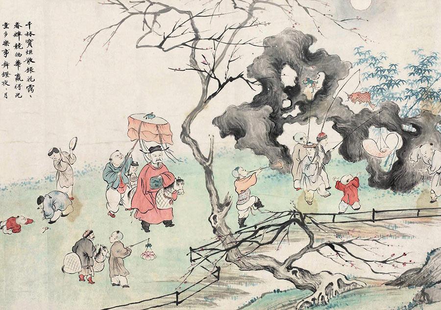

An Age-Old Festival
The history of China is thousands of years old, and the Lantern Festival's history is perhaps just as long. Records suggest that some form of this celebration existed even as early as the Han dynasty, in the 200-300s BCE. While the festival's purpose is now more or less spiritual (or superstitious, depending on your view) early Buddhist monks celebrated the day to honor Buddha. The ritual was soon adopted by the rest of China and Southeast Asia, and today, even the most rural of Chinese villages will take a day off to host some version of the celebration.
For more info, click here.
